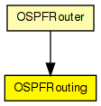

Implements OSPFRouting.
The following diagram shows usage relationships between types. Unresolved types are missing from the diagram.
The following diagram shows inheritance relationships for this type. Unresolved types are missing from the diagram.
| Name | Type | Description |
|---|---|---|
| OSPFRouter | compound module |
An OSPFv2 router. |
| Name | Type | Default value | Description |
|---|---|---|---|
| ospfConfigFile | string |
xml file containing the full OSPF AS configuration |
| Name | Value | Description |
|---|---|---|
| display | i=block/network2 |
| Name | Direction | Size | Description |
|---|---|---|---|
| ipIn | input | ||
| ipOut | output |
// // Implements \OSPFRouting. // simple OSPFRouting { parameters: string ospfConfigFile; // xml file containing the full OSPF AS configuration @display("i=block/network2"); gates: input ipIn @labels(IPControlInfo/up); output ipOut @labels(IPControlInfo/down); }